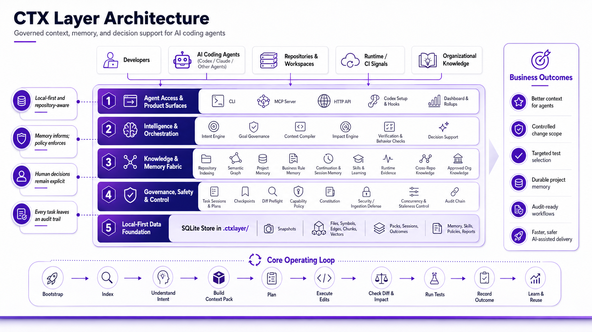

CTX Layer
The governed execution layer for AI coding agents.
CTX Layer transforms AI coding agents from code generators into reliable, auditable, continuously improving software engineering systems.

What It Is
CTX Layer sits between an AI coding agent and your codebase. It provides context intelligence, execution governance, impact awareness, organizational intelligence, auditability, and continuous improvement.
Without CTX Layer, AI agents generate code. With CTX Layer, AI agents operate as governed software engineers.
Why This Matters
Traditional Agent
Prompt
|
v
Agent
|
v
CodeWith CTX Layer
Prompt
|
v
CTX Layer
|-- Context Intelligence
|-- Project Intelligence
|-- Governance
|-- Impact Analysis
|-- Skill Library
|-- Audit Trail
`-- Continuous Learning
|
v
Agent
|
v
CodeWhy CTX Layer Exists
| Capability | Standard coding agent | CTX Layer |
|---|---|---|
| Code generation | Yes | Yes |
| Context management | Limited | Yes |
| Execution governance | Limited | Yes |
| Impact analysis | Limited | Yes |
| Project intelligence | Limited | Yes |
| Audit trail | Rare | Yes |
| Root-cause analysis | No | Yes |
| Continuous improvement | No | Yes |
| Organizational knowledge | No | Yes |
Retrieve relevant files, policies, memory, and impact signals before an agent edits.
Use structured plans, capability policy, checkpoints, and diff checks to reduce wrong-file edits.
Record summaries, decisions, and gotchas so future Codex tasks do not start from zero.
Cognitive Improvement Loop
Most systems stop when the agent executes. CTX Layer captures the outcome, analyzes mistakes and successes, identifies root causes, creates interventions, and improves future agent behavior.
Install
python -m pip install --upgrade "https://github.com/abhilashsblai/ctxlayer-release/releases/download/v0.2.0a3/ctxlayer-0.2.0a3-py3-none-any.whl"Then run ctxlayer --version and configure a repository with ctxlayer --repo . setup codex --install-hooks --configure-mcp --absolute-mcp-repo.